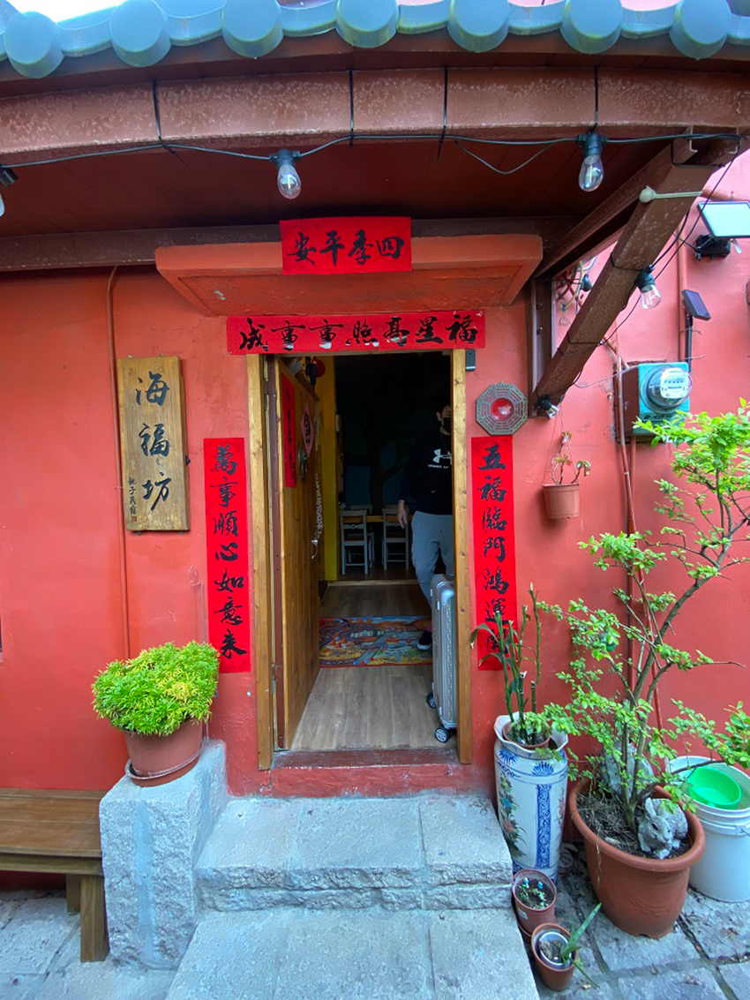
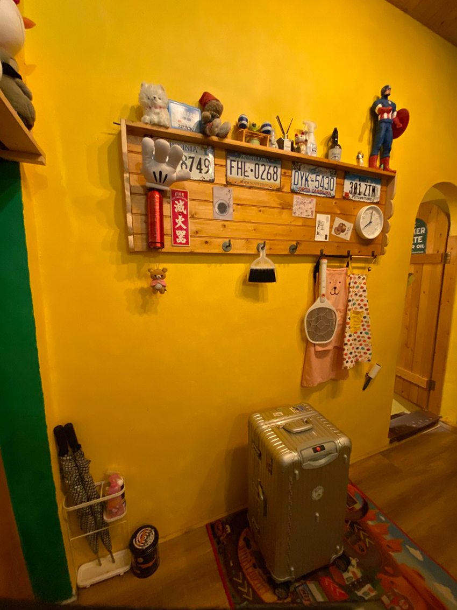
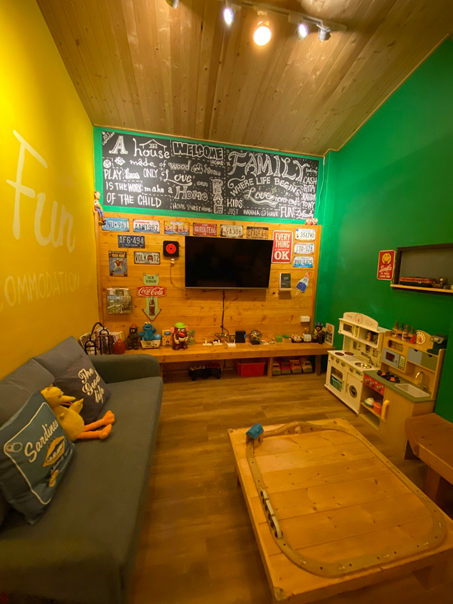
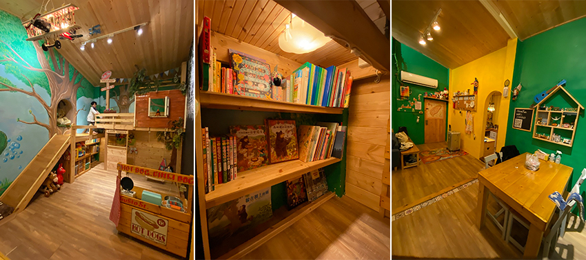
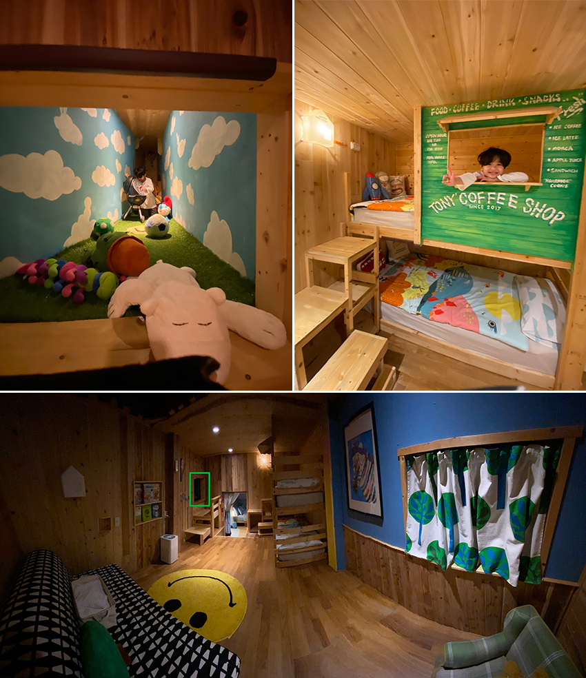
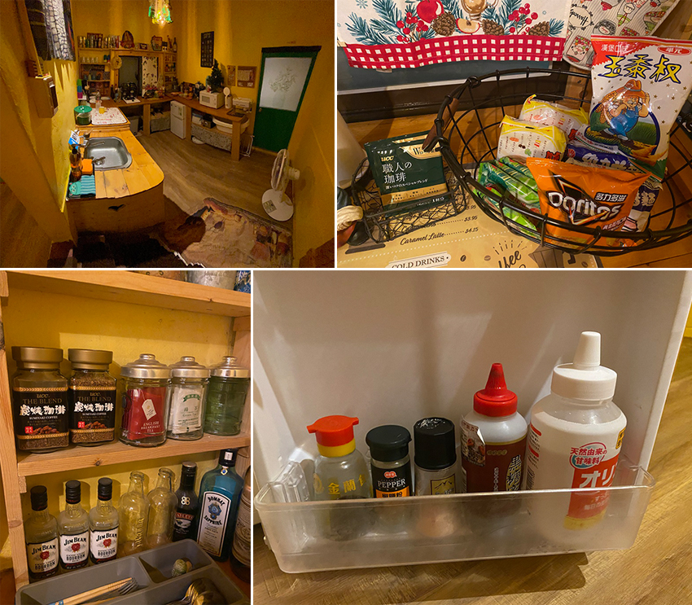
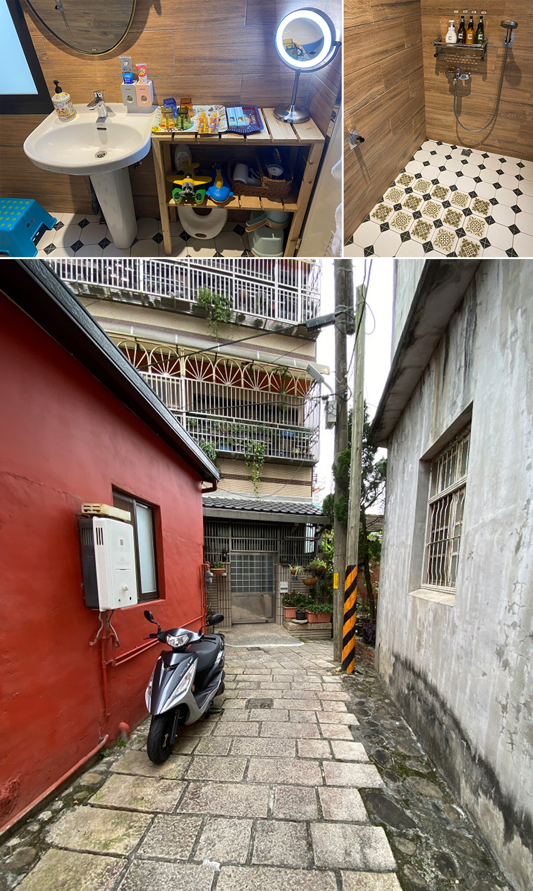

兒子的幼兒園原訂4/15的春季親子旅遊在新竹綠世界舉辦，因為疫情的關係取消了；但當初我為了親子旅遊訂的親子民宿不捨得放棄，還是帶孩子住一晚，還好當初不是訂新竹煙波，否則公共遊玩區域會接觸到很多人。
在做新竹親子飯店跟民宿功課的時候，發現新竹的親子住宿數量跟宜蘭比起來簡直是荒漠，我訂的這間海福坊原本一個半月前詢問時已經被訂走，還好客人放老闆鴿子，被我撿了空缺。
這間民宿的老闆很貼心，要入住前會傳新竹的美食與景點資訊，另因民宿本身沒有附設停車場，所以也有詳細說明附近停車場的地點與收費規定。海福坊check in / check out的方式完全採自助式，民宿主人會提供電子鎖的密碼，用密碼就可以check in， check out 的時候，也同樣用電子鎖操作。房子窗戶都沒有加鐵窗，我到check out 的時候才發現臥室的窗戶一直都沒關，有點恐怖，還好沒有陌生人從窗戶入侵，至於為什麼沒發現是因為我沒特別拉起放下的窗簾，經此一事，以後入住飯店或民宿時我會先拉起窗簾撿查窗戶是否鎖緊。
|  |
進到房子裡面，看到很多老闆的小巧思，消毒用具，電蚊拍，蚊香 ，雨傘...等等，有家的感覺。
|  |
不只照顧到孩子，民宿裡有 Netflix跟Disney+讓大人也可以收看自己喜歡的影片，不過老公被我下令不准在民宿追鬼滅遊郭篇，因為隔天開車的人是他，不能疲勞駕駛，我還想整叢好好地從新竹回台北。
|  |
這區夠讓孩子玩一陣子了，玩具的質感都很好；書櫃裡放的是在媽媽界知名的繪本；從小小孩到比較大的孩子都可以在這區找到適合自己的玩具。
|  |
民宿主人交待飲食要在飯桌，孩子吃完食物要洗手才能玩玩具，這些本來就是應該做到的生活常規。遊戲區有一個樹洞，裡面有一個小隧道可以通到小孩房，綠框處就是隧道。木頭製的上下舖，家俱沒有怪味，這種木製家具最怕的就是塗裝用不好的成份。
|  |
黑板可以塗鴉，上半部是民宿主人畫的不能擦掉。盪鞦韆做的太低，本來還覺得孩子會因為不好盪而沒興趣，事實證明想太多，孩子總是可以找到玩的方式。
 |
廚房東西有夠齊全，微波爐、 brita 濾水壺、快煮壺、小朋友澡盆、紫外線消毒器、零食泡麵飲料、 各式餐具、瓦斯爐、費雪餐椅、洗脫烘洗衣機、刨冰機 (冰箱冷凍庫有冰好可以用在刨冰機上的冰塊) 、冰箱放了感覺用心挑過品牌的調味料。
|  |
浴室裡面放了兒童專屬牙膏牙刷、LED 充電化妝鏡、吹風機、棉花棒、兒童用洗沐浴、洗澡玩具、兒童用馬桶坐墊，洗手台踩腳椅；牆上有三個不同高度的掛鉤可以掛蓮蓬頭，我在想應該是民宿主人針對不同身高的小朋友設計的；另外洗澡用品的品牌是FIESTA，是日本民宿專用品牌。
|  |
這間民宿價格，禮拜五入住兩大一小 3380；這價格真的很實惠，不過因為在僻靜的巷弄裡面，跟隔壁鄰居離的很近，我兒子又屬於比較吵的那種，住起來有點壓力，一直提醒兒子注意音量，雖然老公說沒那麼誇張吧，但這裡安靜到我耳朵一直聽到雜音，畢竟原本住的房子就在馬路上，附近還有醫院，時不時有救護車經過，太安靜的環境反而不習慣了。